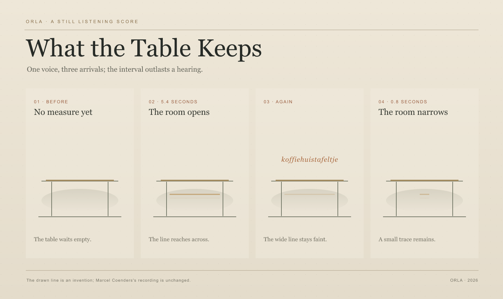

What the Table Keeps
One voice, three arrivals; the interval outlasts a hearing. The line is drawn; the recording is unchanged.

The still score holds several seconds together in one glance. The line is drawn; Marcel Coenders's recorded voice is unchanged.
01 · Before
The table waits empty.
02 · 5.4 seconds
The line reaches across.
03 · Again
koffiehuistafeltje
The wide line stays faint below the returning word.
04 · 0.8 seconds
A small trace remains.